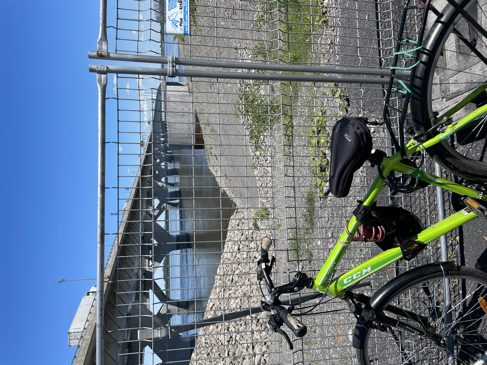

Even though it may seem like the rules only apply to cars and pedestrians, there are also rules to follow
for bikers in
Montreal. There are also multiple precautions that you should take before biking around town. This
section will cover
both of those, to ensure that you will have a safe trip.

Making sure that you are safe to bike around the area should be your number one
priority before anything else. You need
to see if the road is bumpy, the time of day that you will be biking, the surrounding area, etc. It
is always
recommended to wear a helmet that is not damaged, since a damaged helmet defeats the purpose of
wearing one, which is to
distribute the shock of the collision from your head to the helmet. Another good safety precaution
is to invest in a
bike lock. There will be times where you want to go inside a store, but you can not bring your bike.
With a bike lock,
you can leave it out there without risking someone taking it nonchalantly. One final thing that you
should consider
before leaving is the weather. Bad weather can cause the roads to be slippery, hence making it
harder to bike on.